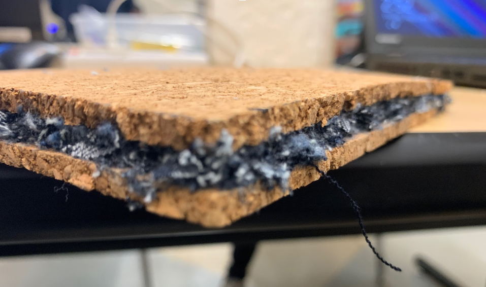

Project: The Pen Pal Machine (P1.1.6 Compound Machine)
Course: Principles of Engineering (POE)
Duration: 8/29/2018 - 9/7/2018
Objective: Design, build and test a working prototype that completes a simple task through a complex organization of mechanisms.
Type of Project: Group Project
This was the first project experienced in POE. We started off with
a narrative about the people of a town that uses compound machines to do basic tasks and they needed more machines.
Our goal was to make a compound machine that had four mechanisms and would only receive effort force at one location.
We decided that the simple task we would complete would be pressing a pen.
The four mechanisms we used were sprockets, a wheel, a gear train, and a pulley.
My responsibility was to complete the documentation along with another groupmate.
I worked on that and one of the mechanisms, the gear train.
The gear train was a simple one that consited of 6 gears with the first being attached to a sprocket.
The final gear had to be attached to the pulley system, which had a carriage on it and pressed down on the pen.
Time was the main problem as sometimes I felt rushed.
However, this was overall a very good project that really showed how much I had improved in my skills of building, something that I had not been used to at the time.

Project: Supreme Insulators (P2.2.3 Renewable Insulation)
Course: POE (Principles of Engineering)
Duration: 02/07/2019 - 02/19/2019
Objective: Design and test a functioning insulator using material that won't harm the environment
Type of Project: Group Projectt
We started the project
off with a rubric.
We had to gather materials that would achieve the goal of making a good insulator while also not harming the environment.
We started off by doing research to figure out what materials would be best for insulation, focusing primarily on levels of thermal conductivity.
An insulator is supposed to not be conductive, and we found that cork and denim met the description of easy to gather, both had low thermal conductivity, and both didn't harm the environment.
One of my group members brought lots of denim while I brought 2 cork rolls which I bought from Marshalls. In class, the entire group contributed with two members cutting up the denim and then giving it to another group member and me. He and I would then stick the denim to one cork roll using glue and, at the end, we glued the other side on like a sandwich.
We tested the insulator using LogTag devices and found the temperatures of both sides of the insulator over time.
Afterward, we placed all of the data into our documentation page.
We analyzed the data with calculations and found that our insulator had a fairly high R value meaning it was a good insulator. Also in the documentation, we documented the life cycle of each material.
I did the life cycle of cork and proved that the material wouldn't harm the environment and that it could be reused.